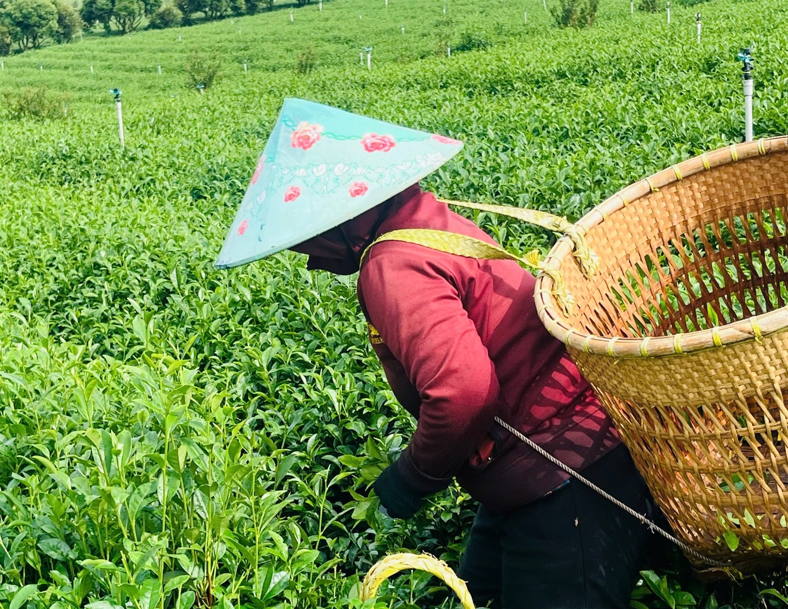
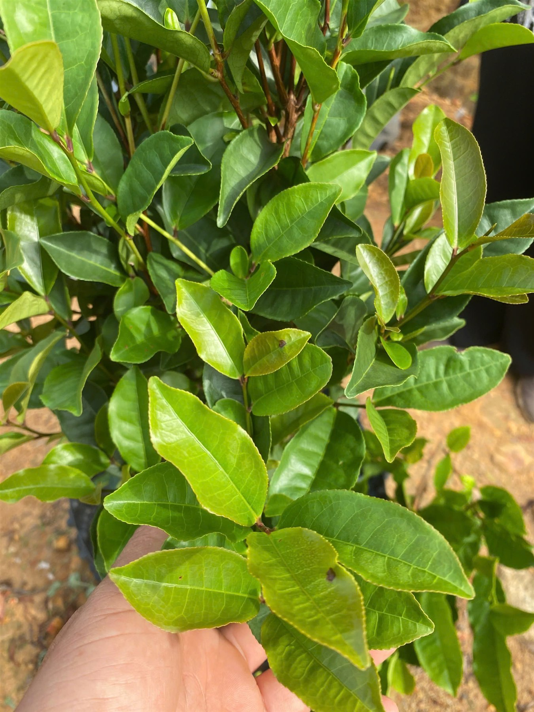
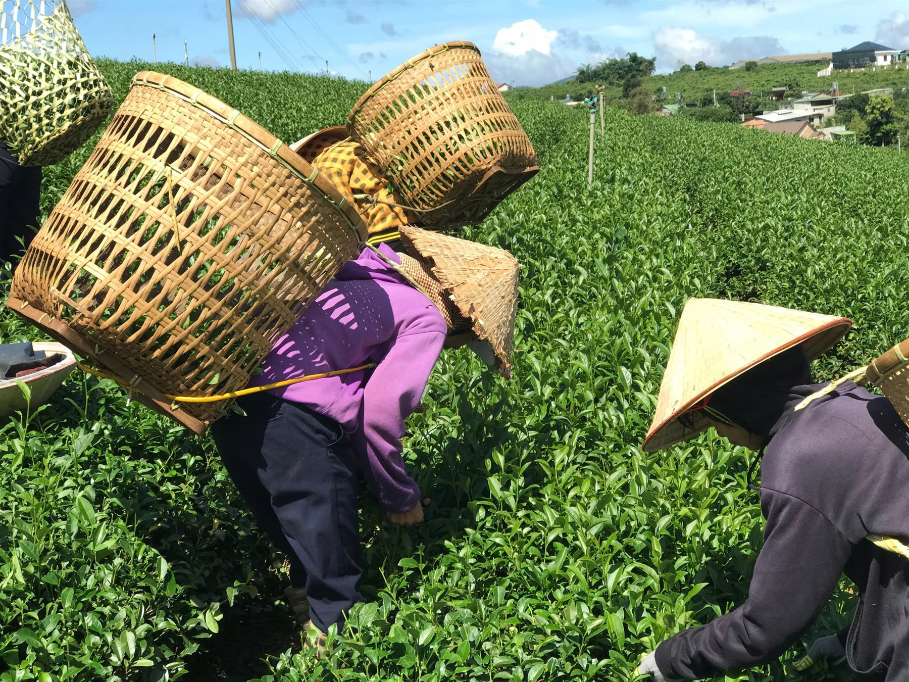
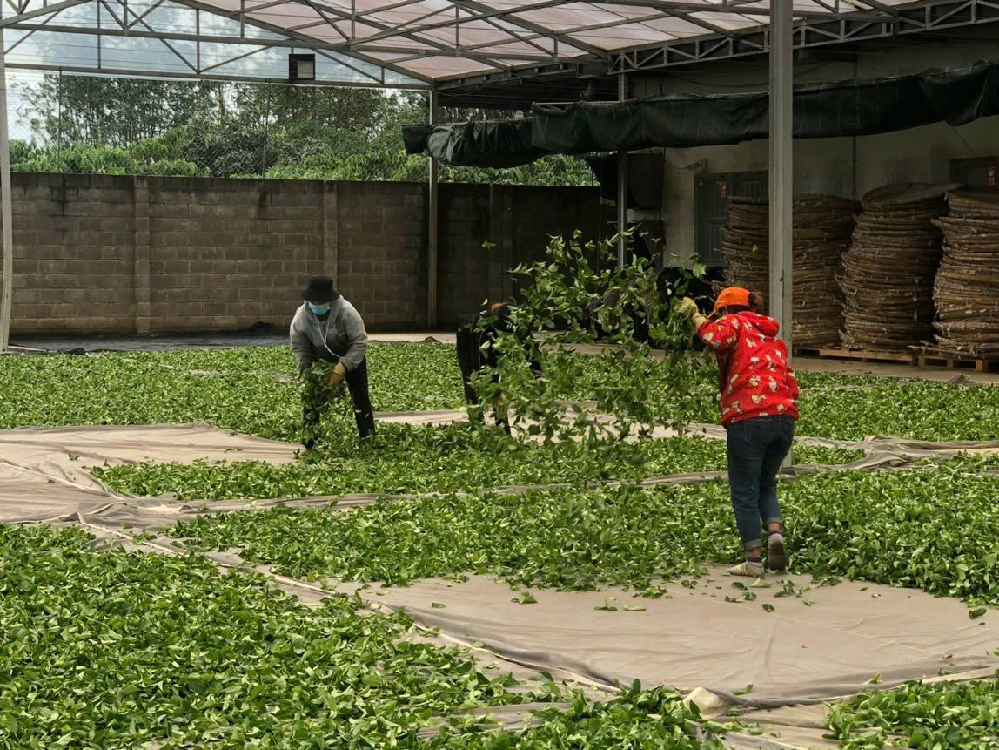
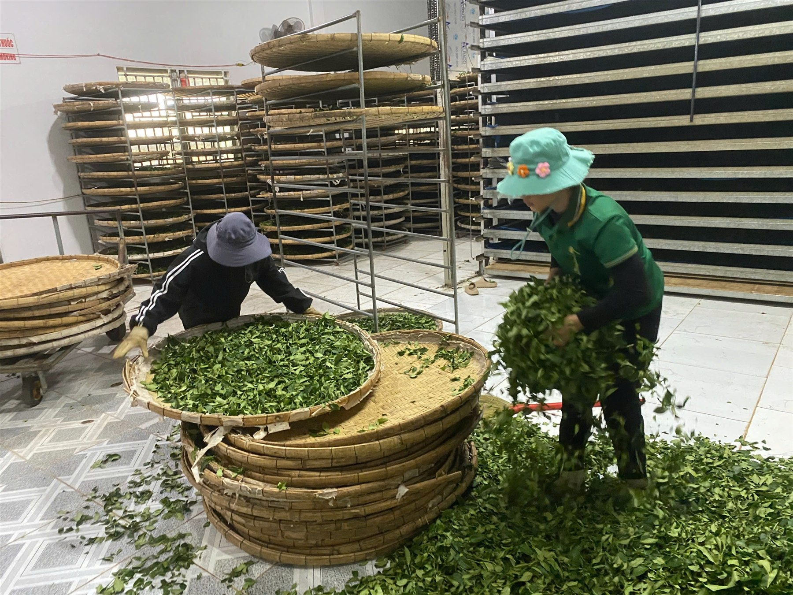
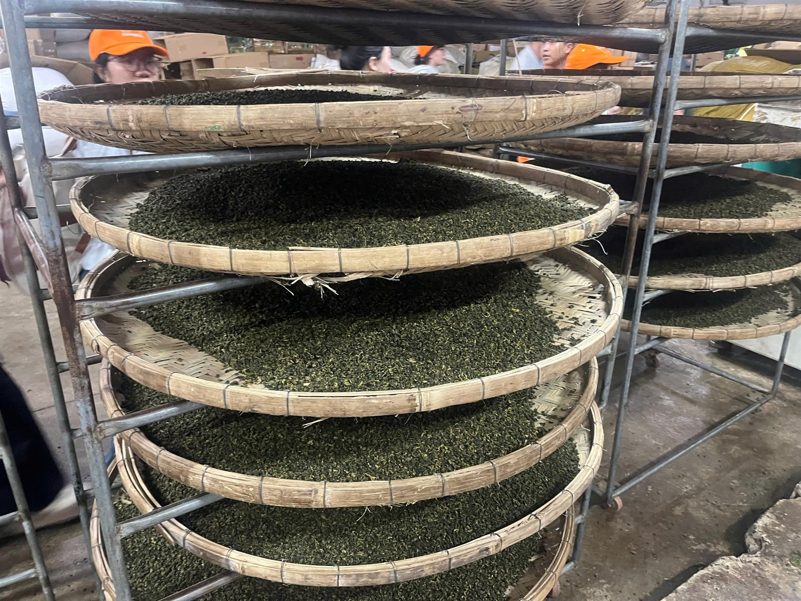
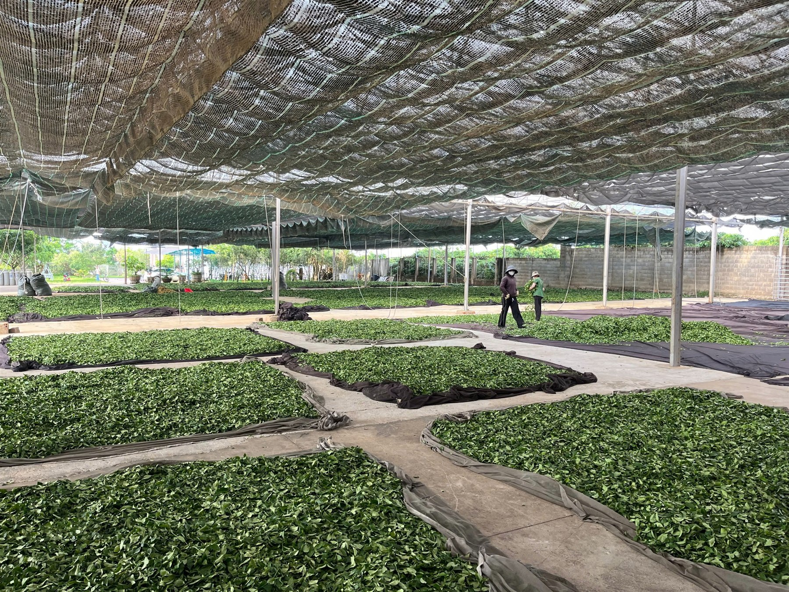

手工採摘
細心採下每一片嫩芽，以珍視之心對待這片稀有茶源。
珍惜每一片嫩芽
茶源故事
有些土地，不僅孕育茶樹，也賦予茶獨一無二、無法在別處尋得的風土個性。
在越南中部的 Cù Mông 山脈，TS 567 海茶・Mã Dọ 茶生長於山林與海洋氣息交融之處。獨特的生態環境，讓茶樹依循土地與四時的節奏自然生長。
TS 567 不以大量生產為目標。我們珍惜茶區與每一次採收，細選茶芽並以手工採摘。每一片茶葉，都凝聚這片土地的自然條件，以及多年守護茶區的人們的耐心與心意。
對我們而言，TS 567 的價值不在於普及，而在於孕育它的土地所賦予的獨特風土。這是一段關於自然、關於守護特殊茶源，也關於讓越南茶的原有價值走近真正珍惜茶的人們的故事。
TS 567 海茶——不只是一杯茶，更是 Cù Mông 山林留在每一份茶品中的印記。
認識茶區茶品
Mã Dọ 茶是珍稀的特色茶品，以尊重 Cù Mông 山區原有風味的心意製成。
TS 567 海茶 · Mã Dọ 茶
珍視品質、細膩與真實。尚未取得的風味描述及包裝規格，將於確認後補充。
自然所定的採收量
TS 567 海茶並非大量生產。目前每兩個月約採收 20 公斤鮮葉；實際採收量仍隨茶區的自然條件與茶樹的生長節奏而變動。
這份稀少不僅賦予茶品鮮明的個性，也體現我們的理念：尊重自然、守護在地茶區，並留存茶原有的價值。
我們不追求大量產出，而選擇珍惜每一季的採摘，讓自然的精選成就與眾不同的茶品。
茶區
越南中部的 Cù Mông 山區，茶樹在山林與海洋氣息交會的環境中生長。以下照片由網站擁有人提供；確切拍攝地點與作業階段仍待確認。









Cù Mông 茶區資料
手工採摘 · [確切位置] · [面積] · [茶樹品種]
茶之旅程
每一步都為了留住 Cù Mông 山區的自然風味，以及 Mã Dọ 茶細膩的本質。
細心採下每一片嫩芽，以珍視之心對待這片稀有茶源。
珍惜每一片嫩芽保留 Cù Mông 山區的自然風味；製茶過程不添加增香香料。
不添加增香香料製茶過程由經驗豐富的製茶師傅協助，重視品質與風味的真實呈現。
用心與經驗純粹原味的精髓
品質資料
檢驗資訊與品質文件將於確認內容及公開權限後提供。
檢驗結果僅適用於報告所列樣品。公開內容須與已核准的文件一致。
關於 TS 567
TS 567 海茶述說山林、海洋，以及人們多年來用心守護自然資產的故事。我們希望每一份茶品，都是探索越南茶文化的一封邀請。
有限的採收量提醒我們珍惜茶區、保護自然，也守住茶最初的樣貌。
獻給愛茶的人
我們期盼將 TS 567 海茶介紹給瑞士的品茗者、珍稀茶收藏家，以及同樣珍視獨特天然茶品的合作夥伴。
以 Cù Mông 山區的珍貴茶源，邀請您探索越南茶文化。
推廣方向合作夥伴資料將於獲准公開後補充。
待更新現有照片可於「茶區」瀏覽；採茶季與相關人物故事將於資料核實後補充。
待更新TS 567 — 來自越南的 Mã Dọ 海茶
天生稀有，傳承珍貴。
一款來自越南山區的獨特好茶，以謙遜、真誠，以及對自然的深切敬意，呈現給世界。
TS 567——來自越南的珍稀好茶，獻給講究品味的茶友。
聯絡我們
歡迎愛茶人士、收藏家與合作夥伴洽詢茶品，以及獨家經銷合作機會。
茶品洽詢及獨家經銷合作：
此表單為預覽版。正式聯絡管道建置前，資料不會送出或儲存。